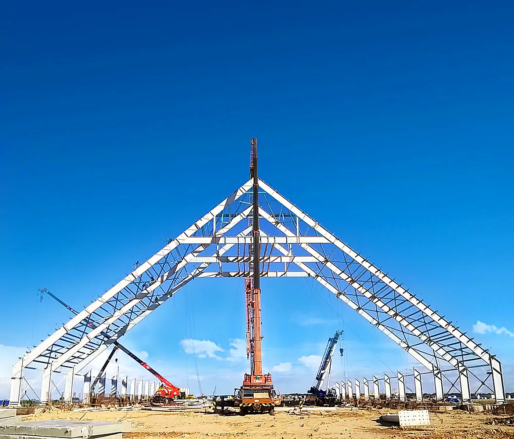
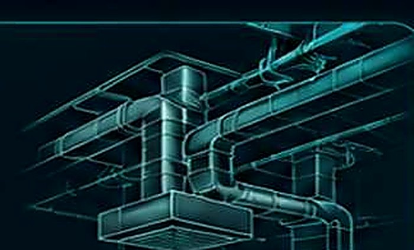

An integrated approach for civil, structural and MEP works, ensuring quality, safety, timely delivery and complete client satisfaction.
Civil, Structural, MEP. One team, one goal.
Right plan, right resources.
Zero compromise, every step.
Commitment delivered, every time.

